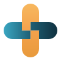

MedBridge TourizmeПонятный разбор для пациентов из России: цены «под ключ», как проходит поездка, как выбрать клинику и не переплатить.
Для гражданина России Армения снимает большинство барьеров лечения за рубежом — документы, перелёт, язык и оплату.
Рыночные ориентиры из открытых прайс-листов (не оферта). Курс пересчёта: 1 USD ≈ 85 ₽.
| Процедура | Частная Москва | Ереван «под ключ» | Экономия |
|---|---|---|---|
| Имплант + коронка (1 ед.) | 60–110 тыс ₽ | от ~34–60 тыс ₽ | 35–55% |
| Винир E-max (1 ед.) | 28–85 тыс ₽ | от ~21–30 тыс ₽ | до 50% |
| Ринопластика | от ~480 тыс ₽ | от ~170 тыс ₽ | до 60% |
| Абдоминопластика | от ~650 тыс ₽ | от ~300 тыс ₽ | 50–55% |
| Расширенный чек-ап | 45–100 тыс ₽ | от ~13–33 тыс ₽ | 50–70% |
| Эндопротезирование сустава | от ~350–600 тыс ₽ | ≈ 380–470 тыс ₽ | зависит от протеза |
Итоговая стоимость индивидуальна и зависит от клиники, материалов и сложности случая. Имеются противопоказания, необходима консультация специалиста.
Вы пишете координатору и при необходимости присылаете снимки/выписки. Передаём их в клиники — бесплатно и без обязательств.
Показываем 1–2 подходящие клиники, ориентир по плану лечения и прозрачную смету «под ключ».
Записываем на удобные даты, помогаем с билетами и жильём, встречаем в аэропорту. Координатор на связи 24/7.
После процедуры помогаем держать контакт с клиникой по рекомендациям и контрольным вопросам.
MedBridge Tourizme — ваш проводник, а не клиника. За медицинскую часть отвечает клиника по прямому договору с вами; MedBridge Tourizme отвечает за подбор, координацию и сопровождение. Мы на стороне пациента: если у клиники возникнут вопросы по обязательствам — координатор помогает их урегулировать.
Расскажите о своей ситуации — подберём подходящую клинику и посчитаем смету «под ключ». Это ни к чему вас не обязывает.
Telegram / WhatsApp: укажите контакт · Сайт: укажите домен
MedBridge Tourizme оказывает организационные и информационные услуги и не осуществляет медицинскую деятельность; решение о лечении принимает врач после очной консультации. Цены приведены как диапазоны-ориентиры и не являются публичной офертой. Имеются противопоказания, необходима консультация специалиста. © 2026 MedBridge Tourizme.